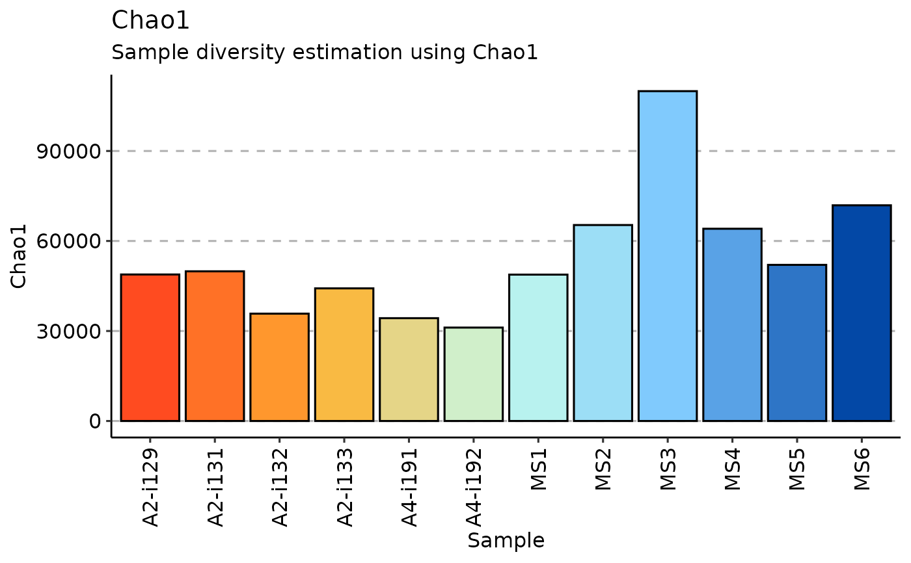
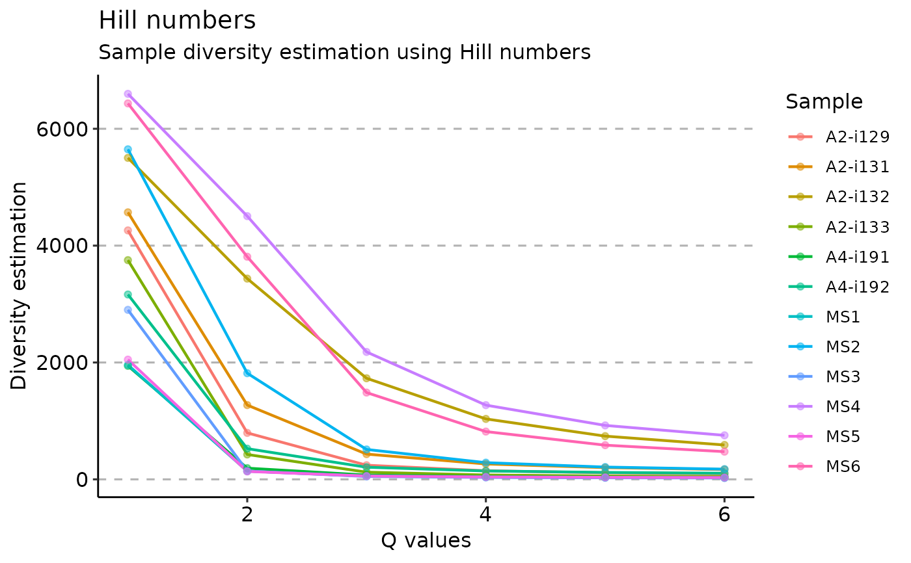
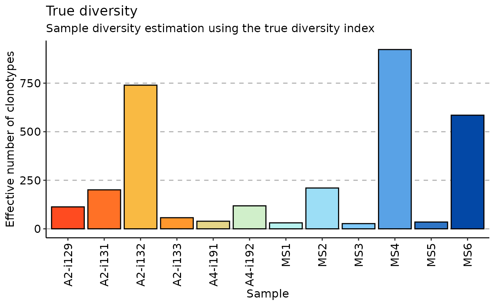
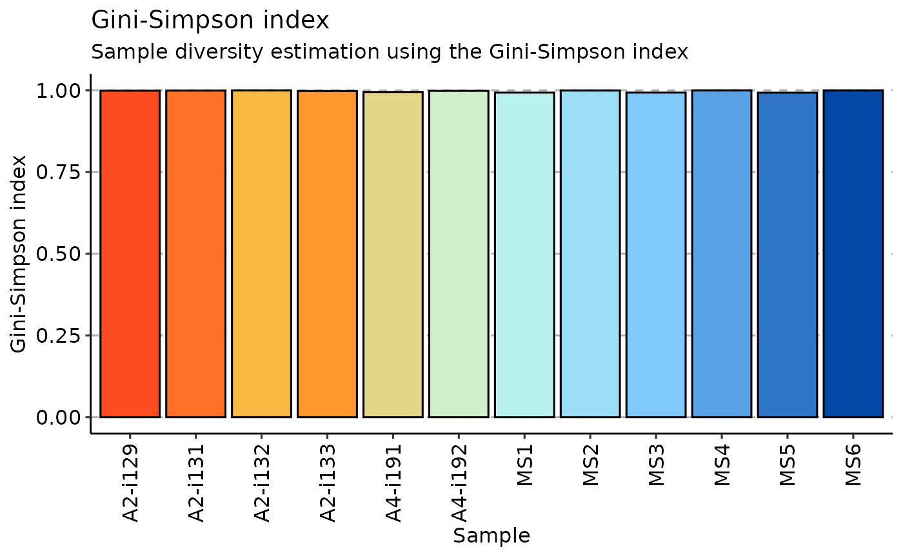
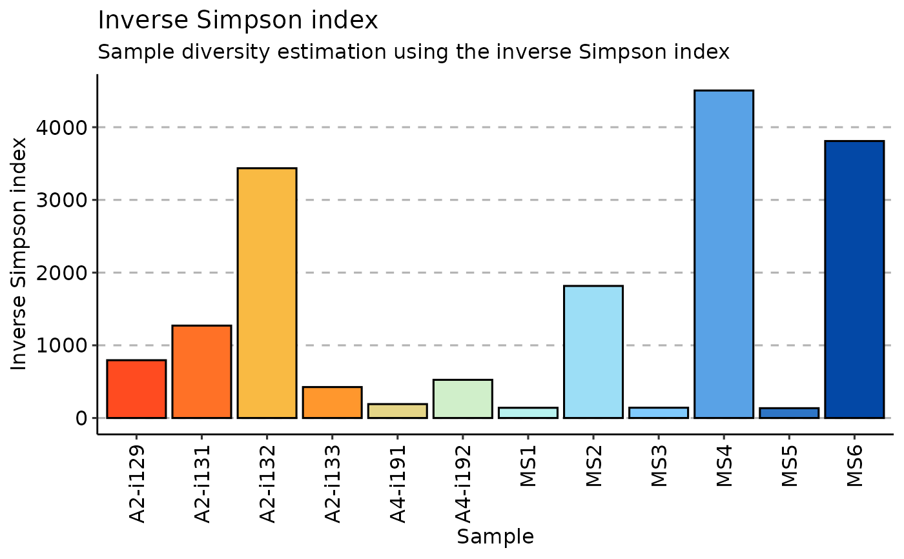
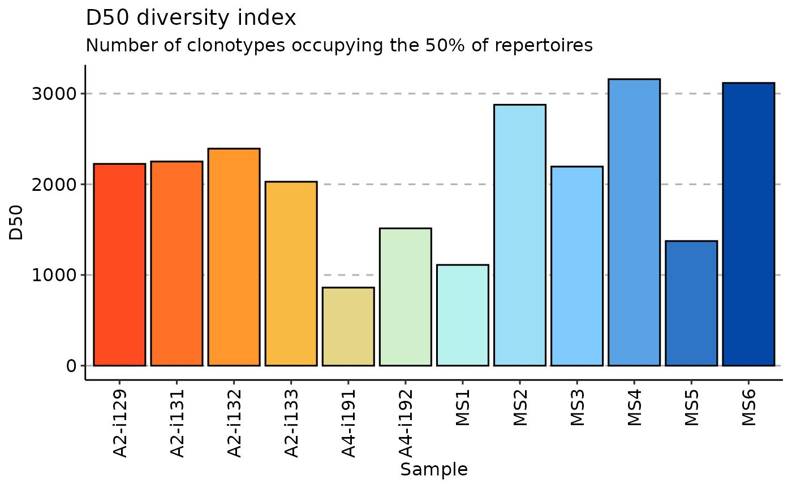

The main function for immune repertoire diversity estimation
Source:R/v0_diversity.R
repDiversity.Rd![[Deprecated]](figures/lifecycle-deprecated.svg)
This is a utility function to estimate the diversity of species or objects in the given distribution.
Note: functions will check if .data is a distribution of a random variable (sum == 1) or not. To force normalisation and / or to prevent this, set .do.norm to TRUE (do normalisation) or FALSE (don't do normalisation), respectively.
Usage
repDiversity(
.data,
.method = "chao1",
.col = "aa",
.max.q = 6,
.min.q = 1,
.q = 5,
.step = NA,
.quantile = c(0.025, 0.975),
.extrapolation = NA,
.perc = 50,
.norm = TRUE,
.verbose = TRUE,
.do.norm = NA,
.laplace = 0
)Arguments
- .data
The data to be processed. Can be data.frame, data.table::data.table, or a list of these objects.
Every object must have columns in the immunarch compatible format. immunarch_data_format
Competent users may provide advanced data representations: DBI database connections, or a list of these objects. They are supported with the same limitations as basic objects.
Note: each connection must represent a separate repertoire.
- .method
Picks a method used for estimation out of a following list: chao1, hill, div, gini.simp, inv.simp, gini, raref, d50, dxx.
- .col
A string that specifies the column(s) to be processed. Pass one of the following strings, separated by the plus sign: "nt" for nucleotide sequences, "aa" for amino acid sequences, "v" for V gene segments, "j" for J gene segments. E.g., pass "aa+v" to compute diversity estimations on CDR3 amino acid sequences paired with V gene segments, i.e., in this case a unique clonotype is a pair of CDR3 amino acid and V gene segment. Clonal counts of equal clonotypes will be summed up.
- .max.q
The max hill number to calculate (default: 5).
- .min.q
Function calculates several hill numbers. Set the min (default: 1).
- .q
q-parameter for the Diversity index.
- .step
Rarefaction step's size.
- .quantile
Numeric vector with quantiles for confidence intervals.
- .extrapolation
An integer. An upper limit for the number of clones to extrapolate to. Pass 0 (zero) to turn extrapolation subroutines off.
- .perc
Set the percent to dXX index measurement.
- .norm
Normalises rarefaction curves.
- .verbose
If TRUE then outputs progress.
- .do.norm
One of the three values - NA, TRUE or FALSE. If NA then checks for distrubution (sum(.data) == 1) and normalises if needed with the given laplace correction value. if TRUE then does normalisation and laplace correction. If FALSE then doesn't do neither normalisaton nor laplace correction.
- .laplace
A numeric value, which is used as a pseudocount for Laplace smoothing.
Value
div, gini, gini.simp, inv.simp, raref return numeric vector of length 1 with value.
chao1 returns 4 values: estimated number of species, standart deviation of this number and two 95% confidence intervals for the species number.
hill returns a vector of specified length .max.q - .min.q
For most methods, if input data is a single immune repertoire, then the function returns a numeric vector with diversity statistics.
Otherwise, it returns a numeric matrix with diversity statistics for all input repertoires.
For Chao1 the function returns a matrix with diversity estimations.
For rarefaction the function returns either a matrix with diversity estimatinos on different step of the simulaiton process or a list with such matrices.
Details
True diversity, or the effective number of types, refers to the number of equally-abundant types needed for the average proportional abundance of the types to equal that observed in the dataset of interest where all types may not be equally abundant.
Inverse Simpson index is the effective number of types that is obtained when the weighted arithmetic mean is used to quantify average proportional abundance of types in the dataset of interest.
The Gini coefficient measures the inequality among values of a frequency distribution (for example levels of income). A Gini coefficient of zero expresses perfect equality, where all values are the same (for example, where everyone has the same income). A Gini coefficient of one (or 100 percents ) expresses maximal inequality among values (for example where only one person has all the income).
The Gini-Simpson index is the probability of interspecific encounter, i.e., probability that two entities represent different types.
Chao1 estimator is a nonparameteric asymptotic estimator of species richness (number of species in a population).
Rarefaction is a technique to assess species richness from the results of sampling through extrapolation.
Hill numbers are a mathematically unified family of diversity indices (differing among themselves only by an exponent q).
d50 is a recently developed immune diversity estimate. It calculates the minimum number of distinct clonotypes amounting to greater than or equal to 50 percent of a total of sequencing reads obtained following amplification and sequencing
dXX is a similar to d50 index where XX corresponds to desirable percent of total sequencing reads.
See also
repOverlap, entropy, repClonality Rarefaction wiki https://en.wikipedia.org/wiki/Rarefaction_(ecology) Hill numbers paper https://www.uvm.edu/~ngotelli/manuscriptpdfs/ChaoHill.pdf Diversity wiki https://en.wikipedia.org/wiki/Measurement_of_biodiversity
Examples
data(immdata)
# Make data smaller for testing purposes
immdata$data <- top(immdata$data, 4000)
# chao1
repDiversity(.data = immdata$data, .method = "chao1") %>% vis()

# Hill numbers
repDiversity(
.data = immdata$data, .method = "hill", .max.q = 6,
.min.q = 1, .do.norm = NA, .laplace = 0
) %>% vis()

# diversity
repDiversity(.data = immdata$data, .method = "div", .q = 5, .do.norm = NA, .laplace = 0) %>%
vis()

# Gini-Simpson
repDiversity(.data = immdata$data, .method = "gini.simp", .q = 5, .do.norm = NA, .laplace = 0) %>%
vis()

# inverse Simpson
repDiversity(.data = immdata$data, .method = "inv.simp", .do.norm = NA, .laplace = 0) %>% vis()

# Gini coefficient
repDiversity(.data = immdata$data, .method = "gini", .do.norm = NA, .laplace = 0)
#> [,1]
#> A2-i129 0.2297097
#> A2-i131 0.2252784
#> A2-i133 0.2513861
#> A2-i132 0.2017009
#> A4-i191 0.3863010
#> A4-i192 0.3064599
#> MS1 0.3610387
#> MS2 0.1561629
#> MS3 0.2396675
#> MS4 0.1224806
#> MS5 0.3320779
#> MS6 0.1278508
#> attr(,"class")
#> [1] "immunr_gini" "matrix" "array"
# d50
repDiversity(.data = immdata$data, .method = "d50") %>% vis()
